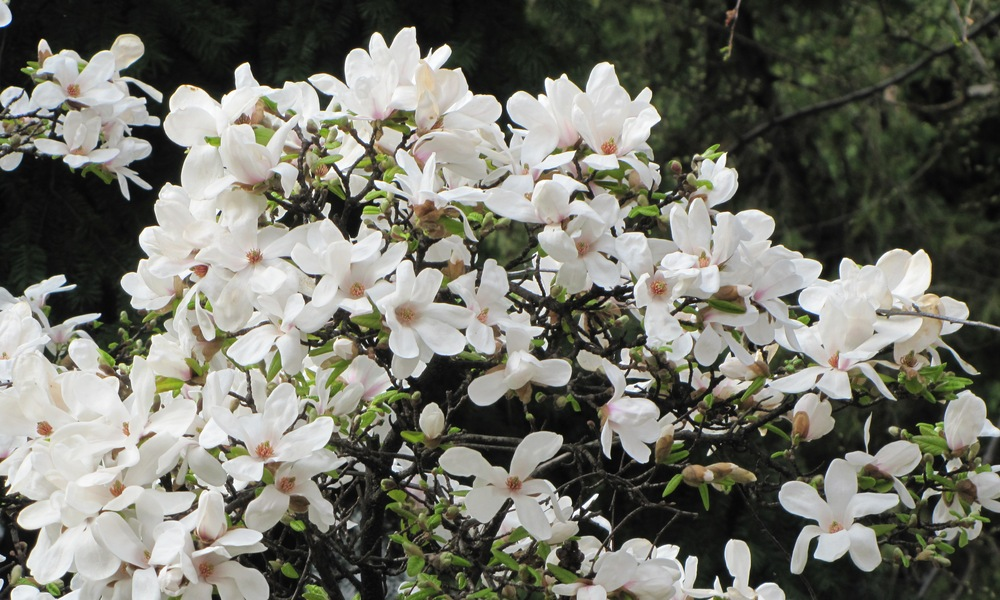
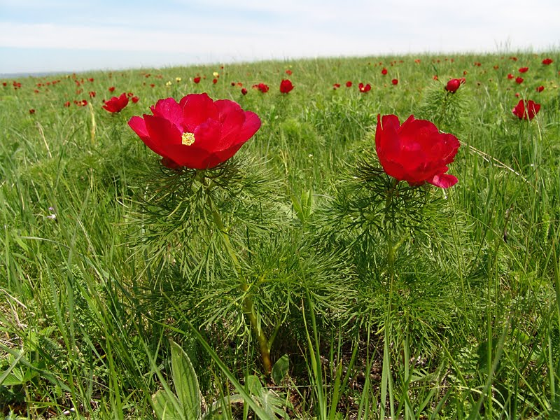

10 унікальних екзотичних рослин, які квітнуть на Шосткинській станції юннатів
Перша рослина це Церцис європейський
Церцис європейський – це декоративна деревна рослина, яка в природньому середовищі росте в зоні середземноморського клімату, але добре почуває себе
і у нас - в помірному кліматі на півночі України. Для Шостки це екзотичне дерево – нагадування про Середземномор`я.
Друга рослина це Магнолія кобус
Магнолія кобус – одна з найдревніших квіткових рослин – адже з`явилася близько 20 млн. років тому. До речі, палеонтологи дослідили, що магнолії росли в той час і на території України (викопні рештки знайдені були в районі Путивля). Зараз найбільша концентрація магнолієвих – у Східних Гімалаях, в Південно-Західному Китаї та в Індокитаї.
Третя рослина це Півонія тонколиста
Півонія тонколиста – це зникаючий вид рослин, який занесений до Червоної Книги і охороняється законом. В Україні цю квітку можна зустріти у південній частині Лісостепу і Степу, або у гірській частині Криму. Відноситься вона до сімейства Піонієвих. Зазвичай півонія тонколиста має колір від червоного до насичено-малинового. Відцвітає вона в середині липня.
Рослини Червоної книги України: які причини зникнення та як захистити
У Міністерстві захисту довкілля та природних ресурсів проводиться робота з підготовки четвертої редакції видання Червоної книги України. Третього березня Мін’юст уже затвердив оновлений перелік видів фауни, що віднесено до ЧКУ. Утім, оновлений перелік видів рослинного світу того ж дня оприлюднено не було.
Нині до третього видання "Червона книга України" (рослинний світ) занесено 826 видів рослин і грибів: судинні рослини (611), мохоподібні (46), водорості (60), лишайники(52), гриби (57).
Як зазначається, кількість видів рослин у третьому порівняно з другим виданням збільшилася на 285 видів, а у другому порівняно з першим — на 390 видів. З огляду на приблизно однакові проміжки часу між виданнями ЧКУ спостерігається певне уповільнення темпів зменшення втрати різноманіття видів рослин і грибів України.
Квіти Червоної книги України
Більшість видів ранньоквітучих весняних рослин (первоцвітів) – це квіти, які занесені до Червоної книги. Такими є всі види підсніжників, шафрани (крокуси), проліски, цикламени, сон-трава, конвалії, зозулині черевички справжні, цибуля ведмежа (черемша), любка дволиста, білоцвіт весняний, рябчик шаховий, горицвіт весняний тощо.